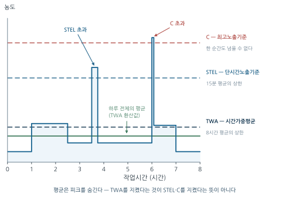
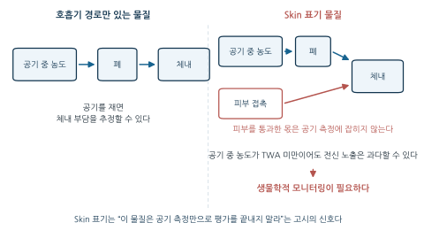
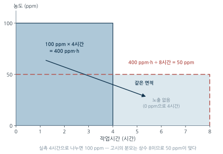
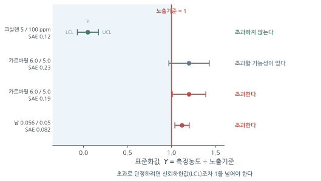
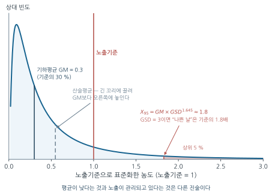

3주차. 작업환경측정 II — 노출기준과 평가
노출기준(TWA·STEL·C)의 개념과 한계, 노출기준 고시의 법적 위상과 별표 읽는 법(Skin·발암성 표기), TWA 계산과 보정, 혼합물의 상가작용 평가, 측정값의 통계적 해석(SAE 판정, 대수정규분포), 한국 작업환경측정 제도 개관
학습목표
이 주를 학습한 후 여러분은 다음을 할 수 있어야 합니다:
- 노출기준 고시의 정의와 사용상의 유의사항(제2조·제3조)을 근거로, “노출기준 이하 = 안전”이 성립하지 않는 이유를 논증할 수 있다
- TWA, STEL, C의 종류와 각각이 존재하는 독성학적 이유를 구분하고, STEL의 적용 조건(15분 미만·1일 4회 이하·간격 60분 이상)을 정확히 진술할 수 있다
- 노출기준이 법률이 아니라 고시에 규정된 이유를 개정 속도의 관점에서 설명할 수 있다
- 고시 별표 1을 읽고
Skin·발암성·생식독성 표기의 의미를 해석하며, Skin 물질에서 생물학적 모니터링이 필요한 이유를 설명할 수 있다 - 권고 기준(TLV)과 법적 기준(PEL, 한국 고용노동부 노출기준)의 차이를 설명할 수 있다
- 시간가중평균(TWA) 노출량을 고시의 산출식으로 계산하고, 연장근무 시 노출기준을 보정할 수 있다
- 혼합물 노출의 상가작용 평가식(노출지수, 혼합물 허용농도)을 적용하고, 상가작용과 독립작용의 적용 요건을 구분할 수 있다
- 측정 결과의 통계적 특성(SAE와 신뢰구간, 기하평균·기하표준편차·대수정규분포)을 해석하고 초과 여부를 판정할 수 있다
- 유사노출군(SEG) 개념과 한국 작업환경측정 제도의 기본 골격(단위작업 장소, 시료채취 근로자 수, 측정시간, 주기)을 설명할 수 있다
1. 노출기준의 개념과 종류
1.1 측정값은 기준이 있어야 의미를 갖는다
2주차에서 우리는 근로자의 호흡역에서 시료를 채취·분석하여 공기 중 농도를 산출하는 방법을 배웠다. 이제 손에 숫자가 하나 쥐어졌다 — “톨루엔 33 ppm”. 그런데 이 숫자만으로는 아무 판단도 할 수 없다. 측정이 평가(Evaluation)가 되려면 비교할 잣대가 필요하다. 그 잣대가 노출기준(Occupational Exposure Limit, OEL)이다.
“노출기준”이란 근로자가 유해인자에 노출되는 경우 노출기준 이하 수준에서는 거의 모든 근로자에게 건강상 나쁜 영향을 미치지 아니하는 기준을 말하며, 1일 작업시간동안의 시간가중평균노출기준(TWA), 단시간노출기준(STEL) 또는 최고노출기준(C)으로 표시한다.
— 「화학물질 및 물리적 인자의 노출기준」(고용노동부 고시) 제2조제1항제1호
정의 속의 세 표현에 주목하자.
- “거의 모든 근로자” — “모든”이 아니다. 정의 자체가 이미 개인차로 인한 예외를 인정하고 있다. 노출기준을 안전과 위험의 경계선으로 읽을 수 없는 이유가 정의 안에 들어 있는 셈이다(§1.6).
- “1일 작업시간동안” — 하루가 아니라 직업 생애 전체(1일 8시간, 주 40시간의 반복)를 전제한 기준이다.
- “TWA·STEL·C로 표시한다” — 노출기준은 하나의 숫자가 아니라 세 가지 형식을 갖는 체계다(§1.2).
1.2 세 종류의 노출기준 — TWA·STEL·C
노출기준이 하나가 아니라 세 종류인 이유는, 건강영향이 나타나는 시간 규모가 물질마다 다르기 때문이다. 수년의 누적 노출이 문제인 물질(만성 독성), 십수 분의 고농도가 문제인 물질(급성 독성), 단 한 순간의 피크도 허용되지 않는 물질(즉각적 자극·독성)이 있다. ACGIH의 TLV(Threshold Limit Value)도, 이를 받아들인 우리나라 고시의 노출기준도 이 세 시간 규모에 각각 대응하는 세 형태로 제시된다.
| 종류 | 고시상의 정의 | 시간 규모 | 대상 |
|---|---|---|---|
| TWA (시간가중평균노출기준) |
1일 8시간 작업을 기준으로 측정치에 발생시간을 곱하여 8시간으로 나눈 값 | 8시간 (반복) | 가장 일반적. 만성 영향이 주된 물질 |
| STEL (단시간노출기준) |
15분간의 시간가중평균노출값 | 15분 | 단시간 고농도가 급성 영향을 일으키는 물질 |
| C (최고노출기준) |
근로자가 1일 작업시간동안 잠시라도 노출되어서는 아니 되는 기준 | 순간 | 자극성 물질 등 즉각적 영향 물질 |
최고노출기준은 별표에서 노출기준 앞에 “C”를 붙여 표시한다(제2조제1항제4호).
STEL을 “15분 평균의 상한”으로만 외우면 조문의 절반을 놓친다. 원문은 이렇다.
“단시간노출기준(STEL)”이란 15분간의 시간가중평균노출값으로서 노출농도가 시간가중평균노출기준(TWA)을 초과하고 단시간노출기준(STEL) 이하인 경우에는 ① 1회 노출 지속시간이 15분 미만이어야 하고, ② 이러한 상태가 1일 4회 이하로 발생하여야 하며, ③ 각 노출의 간격은 60분 이상이어야 한다.
조문의 구조를 읽어 두자. ①②③의 세 조건은 농도가 TWA와 STEL 사이의 구간에 들어왔을 때 적용된다. 즉 “STEL만 넘지 않으면 몇 번이든 괜찮다”가 아니라, TWA를 넘는 순간부터 지속시간·횟수·간격이라는 세 개의 추가 제약이 함께 걸린다. 이 세 조건을 뒤집은 것이 실제 측정 결과의 초과 판정 기준이 된다(§2.3).
세 기준의 관계를 하루의 농도 변화 위에 그려 보면 다음과 같다.

핵심 논리는 이렇다. TWA는 평균이므로 피크를 숨긴다. 하루 평균이 기준 이하여도 그 안에 짧은 고농도 노출이 숨어 있을 수 있고, 급성 영향이 있는 물질에서는 이 피크 자체가 위험하다. 그래서 평균과 별도로 15분 단위(STEL) 또는 순간(C)의 상한을 둔다. TWA를 지켰다는 것이 STEL·C를 지켰다는 뜻이 아니며, 세 기준이 설정된 물질은 셋 모두와 비교해야 한다(§2.3).
1.3 노출기준은 왜 ’법률’이 아니라 ’고시’에 있는가
우리나라의 노출기준을 찾으려고 「산업안전보건법」 조문을 아무리 뒤져도 “벤젠 0.5 ppm” 같은 숫자는 나오지 않는다. 법률은 “고용노동부장관이 노출기준을 정하여 고시한다”는 위임 규정(법 제106조)만 두고, 실제 숫자는 「화학물질 및 물리적 인자의 노출기준」이라는 고용노동부 고시에 담겨 있다. 이 고시는 법 제106조·제125조 및 시행규칙 제144조에 근거한 법규명령적 고시로, 권고가 아니라 법적 구속력을 갖는 기준이다(제1조).
왜 이렇게 설계했을까. 답은 개정 속도에 있다.
| 시점 | 고시 번호 |
|---|---|
| 제정 1986.12.22 | 노동부고시 제86-45호 |
| 개정 1988.12.23 / 1991.3.30 / 1998.1.5 | 제88-69호 / 제91-21호 / 제97-69호 |
| 개정 2002.2.4 / 2002.5.6 / 2007.6.8 / 2008.6.17 / 2009.9.25 / 2010.6.28 | 제2002-2호 ~ 제2010-44호 |
| 개정 2011.3.2 / 2012.3.26 / 2013.8.14 / 2016.8.22 | 고용노동부고시 제2011-13호 ~ 제2016-41호 |
| 개정 2018.3.20 / 2018.7.30 | 제2018-24호 / 제2018-62호 |
| 개정 2020.1.14 (2020.1.16 시행) | 제2020-48호 (현행) |
1986년 제정 이후 18회 개정되었다. 2010년대만 보아도 거의 2년에 한 번 꼴이다. 게다가 고시 제12조는 매 3년마다 타당성을 검토하도록 재검토기한을 명시하고 있다.
노출기준의 근거는 독성학·역학이고, 이 근거는 계속 갱신된다. 어제까지 안전하다고 여긴 농도가 새 역학 연구로 뒤집히면 기준은 즉시 내려가야 한다. 그 갱신을 법률 개정 절차(국회 심의·의결)에 걸어 두면 과학과 규제 사이의 시차가 몇 년 단위로 벌어진다. 그래서 위임의 논리가 나온다 — “보호해야 한다”는 의무는 법률에, “얼마나”라는 수치는 고시에 두어, 과학이 바뀌는 속도로 숫자를 따라가게 하는 것이다.
같은 논리가 고시 스스로에게도 적용된다. 고시에 노출기준이 규정되지 않은 물질이라도 법·시행령·규칙의 적용이 배제되지 않으며, 그런 물질의 노출기준은 ACGIH가 매년 채택하는 TLV를 준용한다(제4조제2항). 별표 1의 비고 역시 “노출기준이 설정되지 않은 물질의 경우 이에 대한 노출이 가능한 한 낮은 수준이 되도록 관리하여야 함”이라고 못 박는다. 기준이 없다는 것은 관리하지 않아도 된다는 뜻이 아니다.
1.4 권고 기준과 법적 기준 — TLV, PEL, 한국 노출기준
같은 물질에 대해 기관마다 다른 숫자를 제시할 수 있다. 혼동을 피하는 축은 1주차에서 정리한 기관 구분과 같다 — 누가 만들었고, 법적 구속력이 있는가.
| 기준 | 제정 기관 | 성격 | 특징 |
|---|---|---|---|
| TLV | ACGIH (전문가 단체) | 권고 기준 | 매년 갱신. 최신 과학적 근거를 빠르게 반영 |
| PEL | OSHA (미국 규제기관) | 법적 기준 | 개정에 법적 절차 필요 → 갱신이 느림 |
| 노출기준 (한국) | 고용노동부 고시 | 법적 기준 | TWA·STEL·최고노출기준(C)의 3종 체계. 작업환경측정 결과 판정의 법적 잣대. 미규정 물질은 ACGIH TLV 준용 |
권고 기준(TLV)은 과학이 갱신되는 속도로 개정되지만 법적 기준은 규제 절차를 거쳐야 하므로, 같은 물질에서 TLV가 법적 기준보다 엄격한(낮은) 경우가 흔하다. 실무적 함의는 분명하다 — 법적 기준 준수는 최소한의 의무이고, 전문가라면 최신 권고 기준까지 참고하여 판단해야 한다. 우리나라에서 측정 결과의 법적 판정 잣대는 고용노동부 고시의 노출기준이며(고시 제4조제1항: 작업환경개선기준과 작업환경측정결과의 평가기준으로 사용), 고시가 침묵하는 물질에서는 ACGIH TLV가 그 자리를 대신한다(제4조제2항).
1.5 별표 1을 읽는 법 — 노출기준 옆에 붙는 표기들
고시의 실질은 별표 1 「화학물질의 노출기준」이다. 731개 물질이 다음 형식의 행으로 나열된다.
| 일련번호 | 국문명 / 영문명 | 화학식 | TWA (ppm) | STEL (ppm) | 비고 (CAS번호 등) |
|---|---|---|---|---|---|
| 226 | 벤젠 / Benzene | C₆H₆ | 0.5 | 2.5 | [71-43-2] 발암성 1A, 생식세포 변이원성 1B, Skin |
표시단위는 제11조가 정한다 — 가스·증기는 ppm, 분진·미스트 등 에어로졸은 mg/m³, 다만 석면과 내화성세라믹섬유는 개/cm³를 쓴다. 그래서 한 물질의 TWA 칸에는 보통 ppm 또는 mg/m³ 중 한쪽만 값이 있고 다른 쪽은 “−”다. (ppm ↔︎ mg/m³ 상호 환산은 「작업환경측정 및 정도관리 등에 관한 고시」 제20조제2항에 계산식으로 규정되어 있으며, 계산 방법은 2주차 §4.4에서 다루었다.)
무엇: 「화학물질 및 물리적 인자의 노출기준」(고용노동부고시 제2020-48호) 별표 1의 실제 지면 한 쪽을 캡처한 이미지. 벤젠 행이 포함된 쪽이면 가장 좋다 — TWA·STEL 칸과 비고 칸의 발암성 1A, 생식세포 변이원성 1B, Skin 표기가 한 화면에 들어온다.
왜: 위의 도식은 별표의 형식을 재현한 것이지 원문이 아니다. 학생이 실무에서 마주치는 것은 이 지면이므로, 한 번은 진짜 지면을 보고 “몇 번째 칸이 무엇인가”를 눈으로 익혀 두어야 한다. 731개 물질이 나열된 분량감도 캡처로만 전달된다.
출처 후보: 국가법령정보센터(law.go.kr) 행정규칙 → 고시 본문의 별표 PDF·HWP, 고용노동부 누리집. 공공누리 제1유형(출처표시)으로 개방된 자료가 대부분이므로 출처를 밝히면 교재 수록이 가능하다.
대안: 캡처가 어려우면 벤젠·톨루엔·아세톤 세 행만 별표의 칸 구조 그대로 재현한 표로 대체(단, 원문 형식임을 명시할 것).
주목할 것은 비고 칸이다. CAS번호 뒤에 붙는 발암성 1B, 생식독성 2, Skin 같은 표기는 숫자가 아니지만, 관리 전략을 바꾸는 정보다.
발암성·생식세포 변이원성·생식독성 표기
제5조제2항은 이 표기들이 “법상 규제 목적이 아닌 정보제공 목적”임을 명시한다. 발암성은 IARC·ACGIH·NTP·EU CLP·OSHA의 분류를, 생식세포 변이원성과 생식독성은 EU CLP를 기준으로 분류한다.
| 구분 | 1A | 1B | 2 |
|---|---|---|---|
| 발암성 | 사람에게 충분한 발암성 증거 | 시험동물에서 충분, 또는 동물·사람 모두에서 제한된 증거 | 제한된 증거는 있으나 구분 1로 분류하기엔 불충분 |
| 생식독성 | 사람에서의 증거로 판단할 정도 | 동물시험 증거로 추정할 정도 | 사람 또는 동물시험 증거로 의심할 정도 |
“정보제공 목적”이라는 단서를 오해해서는 안 된다. 규제 수치가 아닐 뿐, 측정 주기(§4.3)와 관리 우선순위를 결정하는 실질적 정보다.
“Skin” 표기 — 공기 측정만으로는 부족하다는 신호
별표 1의 비고 제1호가 Skin의 뜻을 정의한다.
“Skin 표시 물질”은 점막과 눈 그리고 경피로 흡수되어 전신 영향을 일으킬 수 있는 물질을 말함(피부자극성을 뜻하는 것이 아님)
괄호 안의 부정문이 핵심이다. Skin은 “피부가 따갑다”는 뜻이 아니라, 피부를 관문 삼아 몸속으로 들어간다는 뜻이다.
왜 이 한 단어가 평가 설계를 바꾸는가. 지금까지 우리가 배운 노출평가는 전부 공기 중 농도를 재는 일이었다(2주차). 그 전제는 “유해물질은 호흡기로 들어온다”이다. Skin 물질에서는 이 전제가 깨진다.

논리는 이렇다. 개인시료채취기는 호흡역의 공기를 잰다. 경피 흡수분은 그 시료에 잡히지 않는다. 따라서 Skin 물질에서는 “공기 중 농도 < TWA”라는 결과가 “전신 노출이 안전하다”를 보증하지 못한다. 장갑 없이 용제를 다루는 작업자와, 밀폐된 작업을 하는 작업자가 같은 공기 농도에서 전혀 다른 체내 부담을 가질 수 있다.
이 간극을 메우는 방법이 생물학적 모니터링(biological monitoring) — 혈액·소변 등 생체시료에서 물질 자체나 대사산물을 측정하여 경로와 무관한 총 체내 부담을 직접 확인하는 것이다. ACGIH가 TLV와 별도로 BEI(Biological Exposure Indices)를 두는 이유이며, 11주차에서 본격적으로 다룬다. Skin 표기는 “이 물질은 공기 측정만으로 평가를 끝내지 말라”는 고시의 신호로 읽으면 된다.
별표 1에서 실제 Skin 표기 물질 몇 개를 뽑아 보자.
| 물질 (국문/영문) | TWA | STEL | 비고 (CAS번호 등) |
|---|---|---|---|
| 벤젠 / Benzene | 0.5 ppm | 2.5 ppm | [71-43-2] 발암성 1A, 생식세포 변이원성 1B, Skin |
| 메틸 알코올 / Methanol | 200 ppm | 250 ppm | [67-56-1] Skin |
| 노말-헥산 / n-Hexane | 50 ppm | − | [110-54-3] 생식독성 2, Skin |
| 니트로벤젠 / Nitrobenzene | 1 ppm | − | [98-95-3] 발암성 2, 생식독성 1B, Skin |
| 사염화탄소 / Carbon tetrachloride | 5 ppm | − | [56-23-5] 발암성 1B, Skin |
| 카바릴 / Carbaryl | 5 mg/m³ | − | [63-25-2] 발암성 2, Skin |
목록을 관통하는 성질이 보인다 — 모두 지용성이 높아 각질층을 통과하기 쉬운 유기용제·농약 계열이다. 반대로 니트로벤젠처럼 휘발성이 낮은 물질은 공기 중 농도가 낮게 나오기 쉬운데도 피부 접촉으로 흡수되므로, 공기 측정 결과만 믿을 때 위험을 가장 크게 과소평가하는 부류가 된다.
대표 물질의 노출기준
앞으로의 계산에 쓸 값들을 별표 1에서 확인해 두자.
| 물질 (국문 / 영문) | TWA | STEL | 비고 |
|---|---|---|---|
| 벤젠 / Benzene | 0.5 ppm | 2.5 ppm | 발암성 1A, 생식세포 변이원성 1B, Skin |
| 톨루엔 / Toluene | 50 ppm | 150 ppm | 생식독성 2 |
| 크실렌(모든 이성체) / Xylene | 100 ppm | 150 ppm | — |
| 에틸 벤젠 / Ethyl benzene | 100 ppm | 125 ppm | 발암성 2 |
| 스티렌 / Styrene | 20 ppm | 40 ppm | 발암성 2, 생식독성 2, Skin |
| 아세톤 / Acetone | 500 ppm | 750 ppm | — |
| 메틸 에틸 케톤(MEK) / Methyl ethyl ketone | 200 ppm | 300 ppm | — |
| 메틸 알코올 / Methanol | 200 ppm | 250 ppm | Skin |
| 노말-헥산 / n-Hexane | 50 ppm | − | 생식독성 2, Skin |
| 일산화탄소 / Carbon monoxide | 30 ppm | 200 ppm | 생식독성 1A |
| 트리클로로에틸렌 / Trichloroethylene | 10 ppm | 25 ppm | 발암성 1A, 생식세포 변이원성 2 |
| 사염화탄소 / Carbon tetrachloride | 5 ppm | − | 발암성 1B, Skin |
| 납 및 그 무기화합물 / Lead | 0.05 mg/m³ | − | 발암성 1B, 생식독성 1A |
| 카바릴 / Carbaryl | 5 mg/m³ | − | 발암성 2, Skin |
표에서 읽어야 할 것은 개별 숫자가 아니라 간격의 크기다. 벤젠(0.5 ppm)과 아세톤(500 ppm)은 1,000배 차이 난다. 둘 다 흔한 용제지만, 벤젠은 발암성 1A(사람에게 충분한 증거)이고 아세톤은 유해성 표기가 없다. 노출기준의 크기는 그 자체가 독성의 세기를 압축한 정보다.
또 하나 — STEL 칸이 “−”인 물질이 적지 않다. 사염화탄소·노말-헥산처럼 STEL이 설정되지 않은 물질에서는 단시간 노출을 비교할 법적 잣대가 없으므로, 평가는 TWA로 수행한다.
1.6 노출기준의 한계와 올바른 해석
노출기준을 다룰 때 가장 중요한 개념적 원칙은 이것이다.
노출기준을 “이 선 아래는 안전, 위는 위험”으로 읽는 것은 잘못된 해석이다. 그 이유는 기준의 성립 과정 자체에 있다.
- 개인차 — 기준은 “대부분의” 근로자를 보호하도록 설정된다. 민감한 개인 (기저질환, 유전적 감수성 등)에게는 기준 이하 농도에서도 건강영향이 나타날 수 있다.
- 독성 종말점의 불완전성 — 기준은 설정 당시 알려진 대표적 건강영향을 근거로 하며, 모든 독성 종말점을 고려하지 못한다.
- 복합 노출의 불완전 반영 — 기준은 기본적으로 단일 물질 기준이다. 실제 작업장의 혼합 노출 효과는 불완전하게만 반영된다(§3에서 상가작용 평가로 일부를 보완한다).
- 노출 경로의 불완전 반영 — 기준은 공기 중 농도로 표시된다. 경피 흡수(§1.5의 Skin)는 이 숫자에 담기지 않는다.
주목할 것은, 이 한계가 학계의 비판이 아니라 고시 자신이 명문으로 선언한 것이라는 점이다. 제3조(노출기준 사용상의 유의사항)는 네 개 항으로 “이렇게 쓰지 말라”를 열거한다.
| 항 | 요지 |
|---|---|
| ① | 각 노출기준은 해당 유해인자가 단독으로 존재하는 경우의 기준이다. 2종 이상이 혼재하면 상가작용으로 유해성이 증가할 수 있으므로 제6조에 따라 산출한 노출기준을 사용해야 한다(§3) |
| ② | 노출기준은 1일 8시간 작업을 기준으로 제정된 것이므로, 근로시간·작업의 강도·온열조건·이상기압 등이 적용에 영향을 미칠 수 있음을 특별히 고려해야 한다(§2.4) |
| ③ | 감수성은 개인에 따라 차이가 있고 노출기준 이하에서도 직업성 질병에 이환되는 경우가 있으므로, 노출기준을 직업병 진단에 사용하거나 “노출기준 이하였다”는 이유만으로 직업성 질병의 이환을 부정하는 근거·반증자료로 사용하여서는 아니 된다 |
| ④ | 노출기준을 대기오염의 평가 또는 관리상의 지표로 사용하여서는 아니 된다 |
③과 ④는 특히 직접적인 금지 규정이므로 뜯어볼 가치가 있다.
- ③ 직업병 판단에 쓰지 말 것. 노출기준은 집단을 대상으로 한 예방 관리의 기준이지, 개인의 인과관계를 판정하는 진단 기준이 아니다. “작업환경측정 결과가 노출기준 이하였으므로 이 사람의 질병은 업무와 무관하다”는 추론은 고시가 명시적으로 금지한다. 산재 인정에서 이 조항이 갖는 무게는 1주차 §3.2의 직업병 인정 요건과 함께 읽어야 한다.
- ④ 대기오염 지표로 쓰지 말 것. 노출기준은 건강한 성인 근로자가 1일 8시간, 주 40시간 노출된 뒤 회복기를 갖는 상황을 전제한다. 일반 대기에는 영유아·고령자·환자가 24시간 노출되며 회복기가 없다. 전제가 다르므로 숫자를 옮겨 쓸 수 없다.
올바른 해석은 이렇다. 초과는 “관리가 필요하다”는 명확한 신호이고, 기준 이하는 “현재 지식으로는 거의 모든 근로자에게 수용 가능한 수준”이라는 조건부 진술이다. 기준 이하라고 해서 노출을 더 낮추려는 노력(관리 위계 — 1주차 §2.1)이 불필요해지는 것은 아니다.
2. 시간가중평균(TWA)의 계산과 보정
2.1 왜 “시간가중” 평균인가
하루의 노출 농도는 일정하지 않다. 오전에는 도장 작업으로 높고, 오후에는 검사 작업으로 낮을 수 있다. 이 변동하는 노출을 하나의 대표값으로 요약할 때, 각 농도가 지속된 시간만큼의 무게를 주어 평균하는 것이 시간가중평균이다.
고시 제2조제1항제2호는 산출식을 다음과 같이 규정한다.
\[TWA\ \text{환산값} = \frac{C_1 \cdot T_1 + C_2 \cdot T_2 + \cdots + C_n \cdot T_n}{8}\]
- \(C\): 유해인자의 측정치 (단위: ppm, mg/m³ 또는 개/cm³)
- \(T\): 유해인자의 발생시간 (단위: 시간)
분자 \(\sum C_i T_i\)는 “농도 × 시간”의 합 — 하루 동안 흡입한 유해물질 부담의 총량에 비례하는 양이고, 이를 8로 나누면 “그 부담을 8시간에 고르게 폈을 때의 농도”가 된다. TWA가 만성 독성 물질의 평가에 적합한 이유가 여기에 있다 — 만성 영향은 순간 농도가 아니라 누적된 용량이 결정하기 때문이다. 거꾸로, 피크가 문제인 물질에서 TWA만으로 부족하다는 것(§1.2)도 같은 논리에서 나온다.
고시의 산출식은 실측 시간의 합이 아니라 상수 8로 나눈다. 그래서 이름도 그냥 TWA가 아니라 “TWA 환산값”이다.
- 작업(발생)시간이 8시간이면 \(\sum T_i = 8\)이므로 두 방식의 결과가 같다.
- 그러나 유해물질 발생시간이 8시간보다 짧으면 결과가 달라진다. 예컨대 4시간만 100 ppm에 노출되고 나머지 4시간은 노출이 없다면, 고시 식은 \(\frac{100 \times 4}{8} = 50\) ppm이고, 실측 시간으로 나누면 \(\frac{100 \times 4}{4} = 100\) ppm이다.
- 어느 쪽이 맞는가? 고시 식(50 ppm)이다. TWA 기준 자체가 “1일 8시간 작업”을 전제로 만들어졌으므로, 비교 대상도 8시간 축에 환산한 값이어야 한다. 노출이 없던 4시간은 “농도 0으로 4시간”이라는 실제 정보이지, 빼고 계산할 시간이 아니다.
같은 원리가 「작업환경측정 및 정도관리 등에 관한 고시」 제34조에도 그대로 나타난다 — 6시간 이내로 측정한 경우 “측정시간 동안의 시간가중평균치를 산출하여 그 기간 동안의 평균농도로 하고, 이를 8시간 시간가중평균하여 8시간 작업 시의 평균농도로 한다”(제2항).
이 환산을 면적으로 보면 분모가 왜 8인지가 한눈에 들어온다.

도장 작업자의 톨루엔 노출을 구간별로 측정한 결과가 다음과 같다. 톨루엔의 노출기준(TWA)은 50 ppm이다. 8시간 TWA를 구하고 판정하라.
| 구간 | 작업 | 시간 | 측정 농도 |
|---|---|---|---|
| 08:00–12:00 | 스프레이 도장 | 4시간 | 45 ppm |
| 13:00–15:00 | 건조·이동 | 2시간 | 30 ppm |
| 15:00–17:00 | 검사·포장 | 2시간 | 15 ppm |
\[TWA = \frac{45 \times 4 + 30 \times 2 + 15 \times 2}{8} = \frac{180 + 60 + 30}{8} = \frac{270}{8} = 33.75\ \text{ppm}\]
(발생시간의 합이 \(4+2+2 = 8\)시간이므로 분모의 8과 일치한다.)
\(33.75\ \text{ppm} < 50\ \text{ppm}\) 이므로 8시간 TWA 기준으로는 노출기준 미만이다.
단, 이것으로 평가가 끝나는 것은 아니다 — 스프레이 도장 중의 단시간 피크가 STEL을 초과했는지는 별도의 질문이다(§2.3).
2.2 얼마나 오래 측정해야 하는가
TWA는 정의상 1일 작업시간(보통 8시간) 전체를 8시간 축에 환산한 값이므로, 측정도 작업시간 대부분을 덮어야 한다. 「작업환경측정 및 정도관리 등에 관한 고시」 제18조제1항이 그 하한을 정한다.
노출기준 고시에 TWA가 설정되어 있는 대상물질을 측정하는 경우:
1일 작업시간동안 6시간 이상 연속 측정하거나, 작업시간을 등간격으로 나누어 6시간 이상 연속분리하여 측정하여야 한다.
다만 다음 어느 하나에 해당하면 대상물질의 발생시간 동안 측정할 수 있다.
- 대상물질의 발생시간이 6시간 이하인 경우
- 불규칙작업으로 6시간 이하의 작업을 하는 경우
- 발생원에서 발생시간이 간헐적인 경우
두 가지를 구분해 두자.
- 6시간의 하한을 두는 이유는 대표성이다. 측정하지 않은 시간의 농도는 알 수 없으므로, 측정 구간이 작업시간의 대부분을 덮어야 TWA 추정이 성립한다.
- “연속분리 측정”이 허용되는 이유는 실무적 제약이다. 흡착관 파과나 여과지 과부하(2주차)로 8시간을 한 매체로 버틸 수 없을 때, 작업시간을 등간격으로 나누어 여러 시료로 나누어 채취해도 합산하면 같은 정보를 얻는다. 다만 등간격이어야 한다 — 임의로 고른 구간만 측정하면 노출이 높은 시간대를 피해 갈 수 있기 때문이다.
- 단서 3호의 예외에서 측정한 값도 §2.1의 원칙대로 8시간 축으로 환산하여 노출기준과 비교한다(측정고시 제34조제1항·제2항).
(시료채취 기구와 유량·시간의 설계는 2주차를 참조하라.)
2.3 단시간·최고 노출의 평가
STEL과 C가 설정된 물질에서는 8시간 TWA와 별도로 단시간 노출을 평가한다. 측정고시 제18조제2항·제3항이 방법을, 제34조제4항이 판정을 정한다.
- STEL 평가(제18조제2항): STEL이 설정된 물질로서 노출이 균일하지 않은 작업특성 때문에 단시간 노출평가가 필요하다고 자격자나 측정기관이 판단하면, 제1항의 측정에 추가하여 단시간 측정을 한다. 이 경우 1회에 15분간 측정하되, 유해인자 노출특성을 고려하여 측정횟수는 정할 수 있다.
- C 평가(제18조제3항): 최고노출 수준을 평가할 수 있는 최소한의 시간 동안 측정한다. 피크를 포착할 수 있는 방법(예: 직독식 기기의 연속 기록 — 2주차)이 필요한 이유다. 다만 TWA가 함께 설정되어 있으면 제1항의 측정(6시간 이상)을 병행해야 한다.
측정한 단시간 농도는 해당 노출기준과 직접 비교하여 평가한다 (제34조제4항 본문). 즉 15분 평균이 STEL을 넘으면 그것으로 초과다. 문제는 15분 평균이 STEL과 TWA 사이에 있을 때다.
2회 이상 측정한 단시간 노출농도값이 단시간노출기준과 시간가중평균기준값 사이인 경우로서, 다음 어느 하나에 해당하면 노출기준 초과로 평가한다.
- 15분 이상 연속 노출되는 경우
- 노출과 노출 사이의 간격이 1시간 미만인 경우
- 1일 4회를 초과하는 경우
§1.2에서 본 노출기준 고시 제2조제1항제3호의 세 조건(15분 미만 · 4회 이하 · 60분 이상 간격)을 그대로 뒤집은 것이다. 정의 조항이 “이래야 허용된다”를 말하고, 평가 조항이 “이러면 초과다”를 말한다. 두 고시가 하나의 규칙을 양쪽에서 기술하고 있는 셈이다.
따라서 종합 판정은 “TWA 기준과 STEL·C 기준을 모두 만족하는가”이다. 하루 평균이 기준 이하여도 15분의 피크가 STEL을 넘으면 부적합이며, 이때 관리의 초점은 하루 전체가 아니라 피크를 만드는 특정 작업에 맞춰진다. 연습문제 1에서 이 종합 판정을 계산으로 수행한다.
2.4 연장근무 시 노출기준 보정 — Brief & Scala 모형
노출기준은 “1일 8시간, 주 40시간”을 전제한다. 그런데 12시간 교대처럼 근무가 길어지면 전제 두 가지가 동시에 무너진다 — 노출 시간은 늘고(체내 축적 증가), 회복 시간은 준다(배설·회복 감소). 그래서 연장근무에서는 노출기준 자체를 하향 보정해야 한다.
이는 실무 관행이 아니라 규정이다. 노출기준 고시 제3조제2항은 “노출기준은 1일 8시간 작업을 기준으로 하여 제정된 것이므로 이를 이용할 경우에는 근로시간, 작업의 강도, 온열조건, 이상기압 등이 노출기준 적용에 영향을 미칠 수 있으므로 이와 같은 제반요인을 특별히 고려하여야 한다”고 정하고, 측정고시 제34조제3항은 “1일 작업시간이 8시간을 초과하는 경우에는 계산식에 따라 보정노출기준을 산출한 후 측정농도와 비교하여 평가하여야 한다”고 규정한다.
보정 모형으로 가장 널리 쓰이는 것이 Brief & Scala 모형이며, 그 보정계수는 위의 두 효과를 각각 하나의 인수로 담는다.
\[RF = \underbrace{\frac{8}{h}}_{\text{노출시간 증가 보정}} \times \underbrace{\frac{24-h}{16}}_{\text{회복시간 감소 보정}}\]
\(h\)는 일일 실제 작업시간이다. 첫째 인수는 8시간 대비 노출 시간 증가의 역수이고, 둘째 인수는 표준 회복시간 16시간(= 24 − 8) 대비 실제 회복시간(24 − h)의 비다. \(h = 8\)이면 \(RF = 1\)(보정 없음)이고, \(h\)가 커질수록 \(RF\)는 1보다 작아진다.
\[\text{수정 노출기준} = \text{기존 TWA 기준} \times RF\]
메탄올의 노출기준(TWA)이 200 ppm일 때, 1일 10시간 근무하는 작업자에게 적용할 수정 노출기준은?
\[RF = \frac{8}{10} \times \frac{24-10}{16} = 0.8 \times 0.875 = 0.7\]
\[\text{수정 노출기준} = 200 \times 0.7 = 140\ \text{ppm}\]
10시간 근무자의 측정 TWA는 200 ppm이 아니라 140 ppm과 비교해야 한다.
3. 혼합물 노출의 평가
3.1 왜 혼합물은 따로 다루는가
노출기준은 물질별로 설정된다. 고시 제3조제1항이 이를 명시한다 — “각 유해인자의 노출기준은 해당 유해인자가 단독으로 존재하는 경우의 노출기준을 말하며, 2종 또는 그 이상의 유해인자가 혼재하는 경우에는 각 유해인자의 상가작용으로 유해성이 증가할 수 있으므로 제6조에 따라 산출하는 노출기준을 사용하여야 한다.”
그런데 실제 작업장에서는 여러 물질에 동시에 노출되는 경우가 훨씬 흔하다. 두 가지 이상의 유해물질이 같은 부위에 작용하면 각각은 기준 이하여도 합쳐진 부담은 기준을 넘을 수 있다. 이것이 상가작용(additive effect)이다.
① 상가작용(원칙)
화학물질이 2종 이상 혼재하는 경우에 혼재하는 물질간에 유해성이 인체의 서로 다른 부위에 작용한다는 증거가 없는 한 유해작용은 가중되므로 노출기준은 다음 식에 따라 산출하되, 산출되는 수치가 1을 초과하지 아니하는 것으로 한다.
② 독립작용(예외)
제1항의 경우와는 달리 혼재하는 물질간에 유해성이 인체의 서로 다른 부위에 유해작용을 하는 경우에 유해성이 각각 작용하므로, 혼재하는 물질 중 어느 한 가지라도 노출기준을 넘는 경우 노출기준을 초과하는 것으로 한다.
조문의 입증 책임 방향을 놓치지 말자. “동일한 표적장기임이 확인되면 상가작용으로 본다”가 아니라 “서로 다른 부위에 작용한다는 증거가 없는 한 가중된다”이다. 즉 상가작용이 기본값(default)이고, 독립작용으로 다루려면 표적이 다르다는 증거를 제시해야 한다. 정보가 불완전할 때 근로자에게 유리한 쪽으로 판단하는 예방원칙(precautionary principle)이 조문의 문법에 새겨져 있는 것이다.
3.2 노출지수 (Exposure Index)
제6조제1항의 산출식은 다음과 같다. 각 물질의 노출을 “그 물질의 기준 대비 몇 분율을 썼는가”로 환산하여 더한다.
\[EI = \frac{C_1}{T_1} + \frac{C_2}{T_2} + \cdots + \frac{C_n}{T_n} \;\leq\; 1\]
- \(C\): 화학물질 각각의 측정치
- \(T\): 화학물질 각각의 노출기준
각 항 \(C_i/T_i\)는 무차원의 “기준 사용률”이다. 상가작용 가정 하에서 인체가 감당할 수 있는 총 사용률이 1이므로, \(EI \leq 1\)이면 적합, \(EI > 1\)이면 노출기준 초과(부적합)다. 판정의 대상은 개별 물질이 각자의 기준 이하인지가 아니라 합이 1 이하인지다 — 아래 예제에서 세 물질 모두 개별 기준 미만이지만 혼합 평가는 초과다.
거꾸로, 표적장기가 서로 다르다는 증거가 있으면 제6조제2항이 적용되어 노출지수를 쓰지 않고 물질별로 각각 비교한다. 이때는 어느 하나라도 자기 기준을 넘으면 초과다. 아래 예제의 세 물질이 만약 각각 간·신장· 중추신경계에 작용한다면 \(EI\) 합산은 의미가 없고, 세 물질 모두 개별 기준 미만이므로 판정이 뒤집힌다. 평가식을 고르는 일이 곧 독성학적 판단이다.
인쇄 작업장에서 톨루엔 30 ppm, 크실렌 40 ppm, 에틸 벤젠 20 ppm이 측정되었다. 세 물질은 모두 중추신경계에 작용하는 방향족 용제다(상가작용 적용). 노출기준(고시 별표 1의 TWA): 톨루엔 50 ppm, 크실렌 100 ppm, 에틸 벤젠 100 ppm.
\[EI = \frac{30}{50} + \frac{40}{100} + \frac{20}{100} = 0.6 + 0.4 + 0.2 = 1.2\]
\(EI = 1.2 > 1\) 이므로 노출기준 초과. 개별적으로는 세 물질 모두 기준 미만(60%, 40%, 20%)이지만, 같은 표적(중추신경계)에 작용하므로 기준 사용률의 합 120%가 판정을 결정한다.
3.3 혼합물의 허용농도
노출지수는 “초과인가 아닌가”만 답한다. 이와 별개로, 혼합물 전체를 하나의 물질처럼 보았을 때의 허용농도 \(TLV_{mix}\)를 구할 수 있다. (이 계산은 고시 제6조의 조문 자체가 아니라, 제6조의 상가작용 원리에서 유도되는 ACGIH의 혼합물 평가 방법이다.) 주어진 정보에 따라 두 가지 형태가 있다.
(1) 각 성분의 농도를 알 때 — 총 농도를 노출지수로 나눈다.
\[TLV_{mix} = \frac{\sum C_i}{EI} = \frac{C_1 + C_2 + \cdots + C_n}{\dfrac{C_1}{T_1} + \dfrac{C_2}{T_2} + \cdots + \dfrac{C_n}{T_n}}\]
논리: 현재 혼합 농도 \(\sum C_i\)에서 기준 사용률이 \(EI\)이므로, 사용률이 정확히 1이 되는 농도는 \(\sum C_i / EI\)이다. \(EI > 1\)이면 \(TLV_{mix}\)는 현재 총 농도보다 작다(그만큼 낮춰야 한다는 뜻).
(2) 중량분율(조성비)만 알 때 — 분율의 역수 합을 사용한다.
\[TLV_{mix} = \frac{1}{\dfrac{f_1}{TLV_1} + \dfrac{f_2}{TLV_2} + \cdots + \dfrac{f_n}{TLV_n}}\]
- \(f_i\): 각 성분의 중량분율 (소수, 합은 1)
금속 탈지 공정에서 세 가지 염소계 용제가 함께 검출되었다. 셋 모두 간 독성을 주된 표적으로 하므로 상가작용을 적용한다. 노출기준은 고시 별표 1의 TWA다.
| 물질 | 측정농도 | 노출기준(TWA) |
|---|---|---|
| 사염화탄소 (Carbon tetrachloride) | 3 ppm | 5 ppm |
| 트리클로로에틸렌 (Trichloroethylene) | 5 ppm | 10 ppm |
| 이염화 에틸렌 (Ethylene dichloride, 1,2-디클로로에탄) | 4 ppm | 10 ppm |
이 혼합물의 허용농도는?
① 노출지수
\[EI = \frac{3}{5} + \frac{5}{10} + \frac{4}{10} = 0.6 + 0.5 + 0.4 = 1.5\]
② 총 농도
\[\sum C_i = 3 + 5 + 4 = 12\ \text{ppm}\]
③ 혼합물의 허용농도
\[TLV_{mix} = \frac{12}{1.5} = \textbf{8 ppm}\]
\(EI = 1.5 > 1\)이므로 현재 초과 상태이며, 같은 조성이라면 혼합물 총 농도를 8 ppm 이하로 낮추어야 적합해진다. 개별 물질은 세 가지 모두 자기 기준의 60%·50%·40%로 기준 미만이라는 점을 확인해 두자.
한 가지 더 — 세 물질은 각각 발암성 1B(사염화탄소), 발암성 1A (트리클로로에틸렌), 발암성 1B(이염화 에틸렌)로 분류되어 있고, 사염화탄소는 Skin 표기가 붙어 있다. 상가작용 계산으로 8 ppm이라는 숫자를 얻었더라도, 이 물질들에 대해서는 “기준 이하로 유지”가 아니라 대체·제거가 우선 검토되어야 한다는 뜻이다.
아세톤 50%, 톨루엔 20%, 크실렌 30%(중량비)로 조성된 세척용 혼합용제가 증발하여 작업환경을 오염시키고 있다. 이 용제의 허용농도를 mg/m³ 단위로 구하라. (상가작용 가정, 성분별 휘발도 차이는 무시. 25 ℃, 1기압)
고시 별표 1의 TWA는 ppm으로 주어져 있으므로 먼저 mg/m³로 환산해야 한다. (분자량: 아세톤 58.08, 톨루엔 92.14, 크실렌 106.17)
| 물질 | TWA (고시) | 분자량 |
|---|---|---|
| 아세톤 | 500 ppm | 58.08 |
| 톨루엔 | 50 ppm | 92.14 |
| 크실렌 | 100 ppm | 106.17 |
① ppm → mg/m³ 환산 (2주차 §4.4, \(\text{mg/m}^3 = \dfrac{\text{ppm} \times M}{24.45}\))
\[\text{아세톤: } \frac{500 \times 58.08}{24.45} = 1{,}188\ \text{mg/m}^3\] \[\text{톨루엔: } \frac{50 \times 92.14}{24.45} = 188\ \text{mg/m}^3\] \[\text{크실렌: } \frac{100 \times 106.17}{24.45} = 434\ \text{mg/m}^3\]
② 중량분율 식 적용
\[\frac{0.5}{1188} + \frac{0.2}{188} + \frac{0.3}{434} = 0.000421 + 0.001064 + 0.000691 = 0.002176\]
\[TLV_{mix} = \frac{1}{0.002176} \approx \textbf{460 mg/m}^3\]
혼합 증기의 총 농도가 약 460 mg/m³ 이하이면 각 성분의 기준 사용률 합이 1 이하가 된다.
③ 검산 — 왜 이 값이 성분들의 개별 기준보다 훨씬 낮은가
총 농도 460 mg/m³일 때 각 성분의 농도와 기준 사용률은 다음과 같다.
| 성분 | 농도 | 기준 | 사용률 |
|---|---|---|---|
| 아세톤 | 460 × 0.5 = 230 | 1,188 | 0.19 |
| 톨루엔 | 460 × 0.2 = 92 | 188 | 0.49 |
| 크실렌 | 460 × 0.3 = 138 | 434 | 0.32 |
| 합 | 1.00 ✓ |
혼합물의 허용농도를 결정하는 것은 가장 많이 든 성분이 아니라 가장 독한 성분이다. 아세톤이 무게로 절반을 차지하지만 사용률은 0.19에 불과하고, 20%뿐인 톨루엔이 0.49로 절반을 잡아먹는다. 톨루엔의 기준(188)이 아세톤(1,188)의 6분의 1이기 때문이다. 혼합용제의 조성을 바꿀 때 무게가 아니라 기준 사용률을 보아야 하는 이유가 여기에 있다.
어느 근로자가 세 가지 케톤·에스터계 용제에 함께 노출되고 있다. 노출기준은 고시 별표 1의 TWA다.
| 물질 | 측정농도 | 노출기준(TWA) |
|---|---|---|
| 아세톤 | 200 ppm | 500 ppm |
| 초산 이차-부틸 (sec-butyl acetate) | 50 ppm | 200 ppm |
| 메틸 에틸 케톤 (2-butanone) | ? | 200 ppm |
혼합 노출이 기준 이하가 되려면 메틸 에틸 케톤은 몇 ppm 이하여야 하는가? (상가작용 가정)
\(EI \leq 1\) 조건에서 미지 농도 \(x\)를 푼다.
\[\frac{200}{500} + \frac{50}{200} + \frac{x}{200} \leq 1\]
\[0.4 + 0.25 + \frac{x}{200} \leq 1 \quad\Rightarrow\quad \frac{x}{200} \leq 0.35 \quad\Rightarrow\quad x \leq \textbf{70 ppm}\]
다른 두 물질이 이미 기준 사용률의 65%를 쓰고 있으므로, 메틸 에틸 케톤에게 남은 몫은 35% — 즉 자기 기준 200 ppm의 35%인 70 ppm뿐이다. 단독으로 있었다면 200 ppm까지 허용되었을 물질이, 동료 물질들 때문에 70 ppm으로 제한된다. 고시 제3조제1항이 “각 노출기준은 단독으로 존재하는 경우의 기준”이라고 못 박은 이유가 이 계산에 들어 있다.
(고시 별표 1에서 “2-부타논”과 “초산 이차-부틸”은 각각 “메틸 에틸 케톤 참조”, 독립 항목으로 수록되어 있다. 같은 물질이 여러 관용명으로 등재되어 있으므로 별표를 찾을 때는 CAS번호로 확인하는 습관이 안전하다 — 메틸 에틸 케톤 [78-93-3], 초산 이차-부틸 [105-46-4].)
4. 초과 여부의 판정 — 측정값의 불확실성 다루기 · 노출자료의 통계적 해석 · 한국의 작업환경측정 제도 개관
4.1 초과 여부의 판정 — 측정값의 불확실성 다루기
측정농도 6.0, 기준 5.0 — 초과인가?
측정값에는 시료채취 및 분석 오차(SAE, Sampling and Analytical Error)가 항상 따라붙는다(오차의 발생원과 정도관리는 2주차에서 다루었다). 측정농도가 기준을 조금 넘었을 때, 그 초과분이 실제 노출 때문인지 측정 오차 때문인지 구별하기 전에는 “초과”라고 단정할 수 없다. 그래서 미국 OSHA의 평가방법은 SAE를 반영한 95% 신뢰구간으로 초과 여부를 판정한다.
「작업환경측정 및 정도관리 등에 관한 고시」 제33조는 “측정한 농도나 측정값은 노출기준 고시와 비교하여 초과여부를 평가한다”고만 규정할 뿐, SAE를 반영한 신뢰구간 판정을 별도로 정하고 있지 않다. 아래의 SAE 판정법은 법정 판정 절차가 아니라, 측정값의 불확실성을 다루는 산업위생학의 표준적 해석 방법이다.
대신 우리 제도는 같은 문제를 입구에서 다룬다 — 측정·분석의 정확도(분석치가 참값에 얼마나 접근하는가)와 정밀도(반복 측정 시 변동이 얼마나 작은가)를 정도관리 제도로 확보하는 방식이다 (측정고시 제2조제1항제15호~제17호, 제3편). SAE를 줄이는 일과 정도관리는 결국 같은 문제의 두 얼굴이다.
\[Y = \frac{\text{측정농도}}{\text{노출기준}} \qquad UCL = Y + SAE \qquad LCL = Y - SAE\]
- \(Y\): 표준화값(standardized concentration) — 노출기준을 1로 놓았을 때의 상대 농도
- \(UCL\): 신뢰상한값(Upper Confidence Limit), \(LCL\): 신뢰하한값(Lower Confidence Limit)
- 참노출의 표준화값은 95% 신뢰수준에서 구간 \([LCL,\ UCL]\) 안에 있다
판정 기준 — 신뢰구간과 1의 위치 관계
판정은 “구간 \([LCL, UCL]\)이 1에 대해 어디에 놓이는가”로 결정된다.

| 조건 | 판정 | 의미 |
|---|---|---|
| \(UCL \leq 1\) | 초과하지 않는다 | 오차를 감안해도 구간 전체가 기준 이하 |
| \(LCL \leq 1\) 이고 \(UCL > 1\) | 초과할 가능성이 있다 | 구간이 1을 걸침 — 오차 때문에 단정 불가 |
| \(LCL > 1\) | 초과한다 | 오차를 감안해도 구간 전체가 기준 초과 |
초과로 단정하려면, 참값이 가장 낮게 있을 가능성까지 고려한 값 — 신뢰하한값(LCL) — 조차 1을 넘어야 한다. \(LCL \leq 1\)은 “참값이 기준 이하일 가능성을 배제할 수 없다”는 뜻이므로 오히려 단정할 수 없는 상태다. “측정값이 기준을 넘었다”와 “초과로 판정한다” 사이에는 이 통계적 확신의 단계가 하나 놓여 있다.
크실렌을 측정·분석한 결과 5 ppm이 검출되었다. 크실렌의 SAE는 0.12, 노출기준은 100 ppm이다. \(Y\), \(UCL\), \(LCL\)을 구하고 판정하라.
\[Y = \frac{5}{100} = 0.05 \qquad UCL = 0.05 + 0.12 = \textbf{0.17} \qquad LCL = 0.05 - 0.12 = \textbf{-0.07}\]
\(UCL = 0.17 \leq 1\) 이므로 노출기준을 초과하지 않는다.
8시간 작업 중 측정된 공기 중 카르바릴 농도는 6.0 mg/m³, 노출기준은 5.0 mg/m³이다. SAE가 0.23인 경우와 0.19인 경우 각각에 대해 95% 신뢰도 기준으로 판정하라.
\[Y = \frac{6.0}{5.0} = 1.2\]
| SAE | UCL | LCL | 판정 |
|---|---|---|---|
| 0.23 | 1.2 + 0.23 = 1.43 | 1.2 − 0.23 = 0.97 | \(LCL \leq 1 < UCL\) → 초과할 가능성이 있다 |
| 0.19 | 1.2 + 0.19 = 1.39 | 1.2 − 0.19 = 1.01 | \(LCL > 1\) → 초과한다 |
측정농도가 같아도 SAE가 작으면(분석 정밀도가 높으면) 초과로 확정되고, SAE가 크면 “초과 가능”에 머무른다.
납흄에 노출되는 근로자의 납 농도를 측정한 결과 0.056 mg/m³이었다. SAE는 0.082이고, 고시 별표 1의 「납 및 그 무기화합물」 노출기준(TWA)은 0.05 mg/m³이다. 판정하라.
\[Y = \frac{0.056}{0.05} = 1.12\]
\[LCL = 1.12 - 0.082 = 1.038 > 1\]
\(LCL > 1\) 이므로 노출기준을 초과한다. 측정값이 기준을 12% 넘었고, 오차 폭(0.082)을 빼고도 여전히 1을 넘기 때문에 단정이 가능하다.
4.2 노출자료의 통계적 해석
하루의 측정은 하루의 표본이다
§4.1의 판정은 한 번의 측정값에 붙는 분석 오차를 다루었다. 그런데 노출에는 또 하나의 변동이 있다 — 날마다, 사람마다 노출 자체가 달라진다. 같은 작업자의 노출도 작업량, 환기 조건, 기온에 따라 날마다 다르고, 어느 하루의 측정값은 이 변동하는 분포에서 뽑힌 표본 하나일 뿐이다. 노출을 제대로 이해하려면 값 하나가 아니라 분포를 보아야 한다.
대수정규분포 — 노출자료의 생김새
작업장 유해물질 농도 자료는 일반적으로 정규분포를 따르지 않는다. 대신 오른쪽으로 긴 꼬리를 가진 비대칭 분포를 보이며, 이를 대수정규분포(lognormal distribution)라 한다.

이런 모양이 되는 이유는 자료의 성질에 있다. 농도값은 0 이상만 존재하므로 왼쪽이 막혀 있고, 소수의 매우 높은 값(극단값)이 간헐적으로 발생하여 오른쪽 꼬리가 길며, 로그 변환하면 정규분포가 된다 — 그래서 “대수(log)정규”다. 긴 꼬리의 극단값은 산술평균을 위로 끌어올리므로, 산술평균은 “전형적인 날”을 대표하지 못한다. 별도의 중심·산포 지표가 필요한 이유다.
기하평균(GM)과 기하표준편차(GSD)
대수정규분포에서 중심경향은 기하평균(Geometric Mean, GM)으로, 산포도는 기하표준편차(Geometric Standard Deviation, GSD)로 나타낸다. 둘 다 “로그를 취해 정규분포로 만든 뒤 평균·표준편차를 구하고 되돌린” 값이다.
\[GM = \sqrt[n]{X_1 \cdot X_2 \cdots X_n} = e^{\frac{1}{n}\sum \ln X_i} \qquad\Longleftrightarrow\qquad \ln(GM) = \frac{1}{n}\sum_{i=1}^{n}\ln X_i\]
\[\ln(GSD) = \sqrt{\frac{1}{n-1}\sum_{i=1}^{n}\left[\ln X_i - \ln GM\right]^2}\]
GSD는 곱셈적 산포이므로 단위가 없고, 최소값이 1이다.
| GSD | 해석 |
|---|---|
| \(GSD = 1\) | 모든 값이 동일 (변동 없음) |
| \(GSD = 1.5 \sim 3.5\) | 일반적인 작업장 자료의 범위 |
| \(GSD > 3\) | 변동성 매우 큼 — 노출이 불안정하다는 신호, 관리 필요 |
분진 농도 측정값이 2, 4, 8, 16 mg/m³일 때 산술평균과 기하평균을 구하라.
산술평균: \[\bar{X} = \frac{2+4+8+16}{4} = 7.5\ \text{mg/m}^3\]
기하평균: \[GM = \sqrt[4]{2 \times 4 \times 8 \times 16} = \sqrt[4]{1024} = 5.66\ \text{mg/m}^3\]
산술평균(7.5)은 최대값 16에 끌려 올라가 있어 4개 값 중 3개가 그보다 작다. 로그 척도에서 2, 4, 8, 16은 등간격이고 그 한가운데가 5.66 — 기하평균이 자료의 “가운데”를 더 잘 대표한다.
95번째 백분위수 — 분포의 위쪽 끝 추정
노출평가에서 궁금한 것은 평균만이 아니라 “나쁜 날”의 노출 — 분포의 위쪽 끝이 기준을 넘는가다. 대수정규분포를 가정하면 95번째 백분위수(\(X_{95}\))를 GM과 GSD로부터 추정할 수 있다.
\[X_{95} = GM \times GSD^{1.645}\]
(1.645는 표준정규분포의 95번째 백분위수에 해당하는 z값 — 로그 척도에서 평균보다 1.645 표준편차 위의 값을 원래 척도로 되돌린 식이다.) 같은 GM이라도 GSD가 크면 \(X_{95}\)는 크게 벌어진다. 예컨대 GM이 기준의 30%여도 GSD가 3이면 \(X_{95} = 0.3 \times 3^{1.645} \approx 1.8\)배로 기준을 넘는다(그림 4.5) — 평균이 낮다는 것과 노출이 관리되고 있다는 것은 다른 진술이다.
누구의 분포인가 — 유사노출군 (SEG)
모든 근로자를 매일 측정하는 것은 현실적으로 불가능하다. 해법은 노출 조건이 유사할 것으로 예상되는 근로자 집단 — 유사노출군(Similar Exposure Group, SEG) — 을 설정하고, 그중 일부를 표본 추출하여 측정한 뒤 결과를 집단 전체의 노출 분포로 일반화하는 것이다. 설정의 기준은 “이 사람들의 노출이 같은 분포에서 나온다고 볼 수 있는가”이다.
- 동일 공정/작업 — 같은 기계, 같은 작업 수행
- 동일 유해물질 — 같은 화학물질에 노출
- 유사한 노출 양상 — 노출 시간, 빈도, 강도가 비슷
- 유사한 작업환경 — 환기 조건, 발생원과의 거리
각 SEG에서 가장 높은 노출이 예상되는 근로자를 반드시 측정 대상에 포함한다. 논리는 보수적 추론이다 — 집단에서 가장 높은 노출이 기준 이하라면, 그룹 전체가 기준 이하라고 판단할 수 있다.
SEG가 잘못 설정되면(노출 양상이 다른 근로자들을 한 군으로 묶으면) GSD가 커진다. 큰 변동성(§4.2의 GSD > 3)은 노출이 불안정하다는 뜻이거나, 군 설정이 노출 실태와 맞지 않다는 신호일 수 있다.
AIHA는 SEG를 축으로 한 노출평가 전략에서 모니터링의 목적을 셋으로 나눈다. 기초(baseline) 모니터링은 SEG마다 노출 농도의 범위와 분포를 파악하는 것으로 역학조사에 가장 유용한 자료를 남기고, 진단(diagnostic) 모니터링은 어느 작업·발생원이 노출을 만드는지 원인을 짚으며, 순응도(compliance) 모니터링은 노출기준 초과 여부를 확인한다. 우리나라의 법정 작업환경측정은 셋 가운데 순응도 모니터링에 가깝고, 기초·진단 모니터링은 사업장이 스스로 설계해야 하는 부분이다.
4.3 한국의 작업환경측정 제도 개관
우리나라에서 지금까지 배운 노출평가는 작업환경측정이라는 법정 제도로 구현되어 있다. 두 개의 고시가 역할을 나눈다 — 「화학물질 및 물리적 인자의 노출기준」이 판정의 잣대를 주고, 「작업환경측정 및 정도관리 등에 관한 고시」가 어떻게 재는가를 정한다. 측정의 주기와 대상은 「산업안전보건법 시행규칙」이 정한다. 여기서는 골격만 보고, 측정기관 지정·정도관리 등 제도 운영의 상세는 14주차에서 다룬다.
단위작업장소와 시료채취 근로자 수
측정의 공간 단위는 단위작업 장소다. 측정고시 제2조제1항제10호의 정의는 이렇다 — “규칙 제186조제1항에 따라 작업환경측정대상이 되는 작업장 또는 공정에서 정상적인 작업을 수행하는 동일 노출집단의 근로자가 작업을 하는 장소”. §4.2의 SEG 개념이 제도 언어로 번역된 것이라 볼 수 있다.
최고노출근로자도 고시가 정의한다(같은 조 제9호) — 측정대상 유해인자의 발생 및 취급원에서 가장 가까운 위치의 근로자이거나, 유해인자에 가장 많이 노출될 것으로 간주되는 근로자. §4.2의 Maximum Risk Employee가 “발생원과의 거리”와 “노출 예상량”이라는 두 개의 조작적 기준으로 번역되어 있음에 주목하자.
측정 인원은 측정고시 제19조가 다음과 같이 정한다.
| 구분 | 기준 |
|---|---|
| 개인시료채취 최소 인원 | 단위작업 장소에서 최고 노출근로자 2명 이상을 동시에 측정 |
| 예외 | 단위작업 장소에 근로자가 1명인 경우에는 그러하지 아니하다 |
| 인원 추가 | 동일 작업 근로자 수가 10명 초과 시 매 5명당 1명 이상 추가 |
| 상한 | 동일 작업 근로자 수가 100명 초과 시 최대 시료채취 근로자 수를 20명으로 조정할 수 있다 (재량 규정) |
| 지역시료채취 기본 | 단위작업장소 내 2개 이상 지점에서 동시에 측정 |
| 지역시료채취 추가 | 단위작업장소 넓이 50 m² 이상이면 매 30 m²마다 1개 지점 이상 추가 |
설계의 논리를 읽어 두자. 최소 인원이 1명이 아니라 2명인 것은 한 사람의 측정값이 갖는 우연 변동(§4.2)을 고려한 것이고, “최고 노출근로자”를 대상으로 하는 것은 §4.2의 보수적 추론과 같은 원리다. 예컨대 작업근로자가 17명이면 기본 2명에 10명 초과분(11~15명, 16~17명의 두 구간)에서 1명씩 더해 4명을 측정한다 — 연습문제 6에서 이 규칙을 적용해 본다.
측정 위치도 두 방식이 다르다(제22조). 개인시료채취는 측정기기를 작업 근로자의 호흡기 위치에 장착하고, 지역시료채취는 발생원에 근접한 위치 또는 근로자의 주 작업행동 범위 내에서 호흡기 높이에 설치한다. (개인 시료채취의 “호흡위치”는 제2조제1항제6호가 호흡기를 중심으로 반경 30 cm인 반구로 정의한다 — 2주차의 호흡역 개념이 그대로 조문화되어 있다.)
측정 시간과 측정 주기
측정 시간은 §2.2의 원칙 그대로다 — TWA 물질은 1일 작업시간 동안 6시간 이상 연속 측정하거나 작업시간을 등간격으로 나누어 6시간 이상 연속분리 측정하며(측정고시 제18조제1항), STEL 측정은 1회 15분(제2항), C 측정은 최고노출 수준을 평가할 수 있는 최소한의 시간(제3항)이다.
측정 주기는 「산업안전보건법 시행규칙」제190조가 정하며, 유해인자의 위험도에 비례하여 짧아진다.
| 상황 | 측정 주기 | 근거 |
|---|---|---|
| 작업환경측정 대상 작업장이 된 경우(신규 설비·공정 등) | 그날부터 30일 이내 최초 측정 | 규칙 제190조제1항 |
| 일반 유해인자 | 반기(6개월)에 1회 이상 | 규칙 제190조제1항 |
| 발암성 물질(특별관리물질)·허가대상유해물질 | 3개월에 1회 이상 | 규칙 제190조제1항 단서, 측정고시 제5조 |
| 노출기준을 초과한 공정 | 3개월에 1회 이상 | 규칙 제190조제1항 단서 |
| 일정 요건을 충족해 완화되는 경우 | 연 1회 이상 | 규칙 제190조제2항 |
주기 설계의 원리는 위험 기반이다 — 되돌릴 수 없는 건강영향(발암성)일수록, 이미 문제가 확인된 공정일수록 더 자주 들여다본다.
주기에는 하한도 있다. 측정고시 제4조제2항은 전회(前回) 측정을 완료한 날부터 다음의 간격을 두도록 정한다.
| 측정 주기 | 최소 간격 |
|---|---|
| 반기 1회 이상 | 3개월 이상 |
| 3개월 1회 이상 | 45일 이상 |
| 연 1회 이상 | 6개월 이상 |
왜 하한을 둘까. 주기가 “반기 1회”라는 말은 상반기·하반기에 각각 한 번씩 하라는 뜻이지, 6월 30일과 7월 1일에 이틀 연속 측정해서 두 반기를 채우라는 뜻이 아니다. 측정은 시간에 걸친 노출 실태를 표집하는 일이므로, 표본이 한 시점에 몰리면 대표성이 사라진다(§4.2). 최소 간격 규정은 형식적 준수로 제도의 목적이 비는 것을 막는 장치다.
또 하나, 예비조사가 형식이 아니라는 점도 확인해 두자. 측정고시 제17조는 예비조사 시 측정계획서를 작성하도록 하고, 여기에 ① 원재료 투입부터 최종 제품 생산까지의 주요공정 도식, ② 공정별 작업내용·화학물질 사용실태와 유해인자 노출 가능성, ③ 측정대상 공정·유해인자·발생주기·종사근로자 현황, ④ 유해인자별 측정방법과 소요기간을 담게 한다. 무엇을 잴지 결정하는 일 자체가 규정된 절차인 셈이다.
측정 단위
측정고시 제20조가 결과 표시 단위를 정한다. 노출기준 고시 제11조의 표시단위와 짝을 이룬다.
| 인자 | 단위 |
|---|---|
| 가스·증기·분진·흄·미스트 등 화학적 인자 | ppm 또는 mg/m³ |
| 석면 | 개/cm³(세제곱센티미터당 섬유개수) |
| 소음 | dB(A) |
| 고열(복사열 포함) | WBGT를 구하여 ℃로 표시 |
ppm과 mg/m³ 사이의 상호 환산은 같은 조 제2항에 계산식으로 규정되어 있으며, 계산 방법과 25 ℃·1기압 기준의 몰부피(24.45 L/mol)는 2주차 §4.4에서 다루었다.
작업환경측정 대상에는 화학적 인자 외에 소음·고열도 포함되지만, 물리적 인자의 물리량·측정방법·평가는 6주차와 7주차에서 다룬다.
요약
| 개념 | 핵심 내용 |
|---|---|
| 노출기준(OEL) | 노출기준 이하에서는 거의 모든 근로자에게 건강상 나쁜 영향을 미치지 아니하는 기준(고시 제2조). 안전/위험의 경계선이 아님 |
| 고시의 위상 | 법률은 위임만, 수치는 고용노동부 고시. 1986년 제정 후 18회 개정, 3년마다 재검토(제12조). 미규정 물질은 ACGIH TLV 준용(제4조②) |
| 3종 체계 | TWA(8시간) · STEL(15분) · C(잠시라도 노출 불가, 앞에 “C” 표기). 평균은 피크를 숨기므로 셋을 별도로 평가 |
| STEL 조건 | 농도가 TWA와 STEL 사이일 때: 1회 15분 미만 · 1일 4회 이하 · 간격 60분 이상(고시 제2조①3). 뒤집으면 초과 판정 기준(측정고시 제34조④) |
| 표기 읽기 | Skin = 점막·눈·경피 흡수로 전신 영향(피부자극성 아님) → 공기 측정만으로 부족 → 생물학적 모니터링. 발암성/생식독성 1A·1B·2는 정보제공 목적 |
| 사용상 유의 | 단독 존재 기준① · 근로시간 등 고려② · 직업병 진단·이환 부정 근거로 사용 금지③ · 대기오염 지표로 사용 금지④ (고시 제3조) |
| TWA 계산 | \(TWA\text{환산값} = \sum C_iT_i / \mathbf{8}\) — 분모는 실측 시간의 합이 아니라 상수 8(고시 제2조①2) |
| 측정시간 | TWA 물질은 6시간 이상 연속 또는 등간격 연속분리(측정고시 제18조①). 발생시간 6시간 이하·불규칙·간헐적이면 발생시간 동안 측정 후 8시간 환산 |
| 연장근무 보정 | 8시간 초과 시 보정노출기준 산출 의무(측정고시 제34조③). Brief & Scala: \(RF = \frac{8}{h}\times\frac{24-h}{16}\) |
| 혼합물 평가 | 상가작용이 기본값 — 서로 다른 부위 작용의 증거가 없는 한 가중(고시 제6조①). \(EI = \sum C_i/T_i \leq 1\). 표적이 다르면 물질별 개별 판정(제6조②) |
| \(TLV_{mix}\) | \(\sum C_i / EI\) (농도를 알 때) 또는 \(1/\sum(f_i/TLV_i)\) (중량분율만 알 때) |
| SAE 판정 | $Y = $ 측정농도/기준, \(UCL = Y+SAE\), \(LCL = Y-SAE\). 초과 단정은 \(LCL>1\)일 때만. 우리 고시의 법정 절차는 아니며, 제도는 정도관리로 대응 |
| 대수정규분포 | 노출자료의 전형적 분포(0 이상, 오른쪽 긴 꼬리, 로그 변환 시 정규). 중심 GM, 산포 GSD |
| X₉₅ | \(X_{95} = GM \times GSD^{1.645}\) — “나쁜 날”의 노출 추정. GM이 낮아도 GSD가 크면 초과 가능 |
| SEG | 유사노출군 — 표본 측정을 집단 분포로 일반화하는 단위. 최고노출근로자 포함 |
| 한국 제도 | 단위작업장소당 최고노출자 2명 이상 동시(1명뿐이면 예외, 10명 초과 시 5명당 1명 추가, 100명 초과 시 20명 상한), 지역시료 2지점 이상·50 m² 이상이면 30 m²마다 추가 |
| 측정 주기 | 반기 1회(발암성·허가대상·초과 시 3개월 1회, 완화 시 연 1회, 신규 30일 이내). 전회 측정과 최소 간격 3개월 / 45일 / 6개월 |
연습문제
문제 1. TWA와 STEL의 종합 판정
용접 작업자의 가상 물질 B(노출기준 TWA 25 ppm, STEL 75 ppm) 노출을 구간별로 측정했다.
| 구간 | 시간 | 평균 농도 |
|---|---|---|
| 오전 용접 | 3시간 | 30 ppm |
| 자재 준비 | 2시간 | 5 ppm |
| 오후 용접 | 3시간 | 20 ppm |
또한 오전 용접 중 협소부 작업 15분 동안의 평균 농도는 80 ppm이었다.
- 8시간 TWA를 구하고 TWA 기준과 비교하라.
- STEL 평가 결과를 판정하라.
- 종합 판정과 관리의 초점을 제시하라.
정답 및 해설
a. \[TWA = \frac{30 \times 3 + 5 \times 2 + 20 \times 3}{8} = \frac{90 + 10 + 60}{8} = 20\ \text{ppm}\] \(20 < 25\) 이므로 TWA 기준으로는 미만이다.
b. 15분 평균 80 ppm > STEL 75 ppm → 단시간노출기준 초과.
c. 종합 판정은 부적합. 관리의 초점은 하루 전체가 아니라 협소부 용접이라는 피크 발생 작업(환기 보강, 작업 방법 개선)에 두어야 한다. TWA만 측정하는 평가 설계였다면 이 문제는 발견되지 않았을 것이다.문제 2. 연장근무 보정
한 화학공장이 8시간 3교대에서 12시간 2교대로 근무제를 바꾸려 한다. 벤젠의 노출기준(TWA)은 0.5 ppm이고, 현재 근로자들의 8시간 TWA 측정값은 0.3 ppm 수준이다.
- 12시간 근무에 적용할 수정 노출기준을 Brief & Scala 모형으로 구하라.
- 현재 노출 수준(0.3 ppm)이 유지된다고 가정하면, 근무제 변경 후 판정은 어떻게 되는가?
정답 및 해설
a. \[RF = \frac{8}{12} \times \frac{24-12}{16} = 0.667 \times 0.75 = 0.5\] \[\text{수정 노출기준} = 0.5 \times 0.5 = 0.25\ \text{ppm}\]
b. 0.3 ppm > 0.25 ppm 이므로 같은 작업환경이 수정 기준 초과가 된다. 환경이 그대로여도 노출 시간이 늘고 회복 시간이 줄면 허용 여부가 뒤집힐 수 있다 — 근무제 변경은 노출평가를 다시 해야 하는 사건이다.문제 3. 혼합물 노출의 종합 평가
자동차 부품 도장 작업장에서 다음이 측정되었다. 세 물질은 모두 중추신경계에 작용하는 유기용제다(상가작용 가정).
| 물질 | 측정농도 | 노출기준(TWA) |
|---|---|---|
| 톨루엔 | 25 ppm | 50 ppm |
| 크실렌 | 60 ppm | 100 ppm |
| 메틸에틸케톤 | 100 ppm | 200 ppm |
- 노출지수를 구하고 초과 여부를 판정하라.
- 이 혼합물의 허용농도 \(TLV_{mix}\)를 구하라.
- 크실렌만 저감할 수 있다면, 적합해지기 위한 크실렌 농도의 상한은?
정답 및 해설
a. \[EI = \frac{25}{50} + \frac{60}{100} + \frac{100}{200} = 0.5 + 0.6 + 0.5 = 1.6 > 1 \;\Rightarrow\; \textbf{초과}\]
개별 물질은 모두 각자의 기준 미만(50%, 60%, 50%)이지만, 같은 표적장기에 작용하므로 합으로 판정한다.
b. 총 농도 \(= 25 + 60 + 100 = 185\) ppm. \[TLV_{mix} = \frac{185}{1.6} = 115.6\ \text{ppm}\]
c. 톨루엔·메틸에틸케톤의 기준 사용률 합이 이미 \(0.5 + 0.5 = 1.0\) 이므로 \(x/100 \leq 0\), 즉 크실렌을 완전히 제거해도 경계값에 겨우 걸린다. 크실렌 저감만으로는 적합해질 수 없고 혼합물 전체의 저감 전략이 필요하다 — 역산형 계산이 관리 의사결정에 주는 정보다.문제 4. SAE 판정
작업장의 스티렌 노출(노출기준 20 ppm)을 측정한 결과 22 ppm이었고, 측정·분석법의 SAE는 0.08이다. 95% 신뢰도 기준으로 판정하고, 같은 측정값에서 SAE가 0.25였다면 판정이 어떻게 달라질지 설명하라.
정답 및 해설
\(Y = 22/20 = 1.1\). SAE 0.08이면 \(LCL = 1.02 > 1\) → 초과한다. SAE 0.25라면 \(LCL = 0.85 \leq 1 < UCL = 1.35\) → “초과할 가능성이 있다”에 머문다. 오차 폭이 크면 참값이 기준 이하일 가능성을 배제할 수 없어 단정이 유보된다 — 정도관리(2주차)로 SAE를 줄이는 것은 분석실만의 문제가 아니라 판정력의 문제다.문제 5. 대수정규분포와 X₉₅
한 유사노출군에서 5일간 측정한 분진 농도가 3, 6, 12, 24, 6 mg/m³이었다 (노출기준 30 mg/m³). 자료가 대수정규분포를 따르고 GSD가 2.0으로 추정되었다.
- 기하평균을 구하라.
- 95번째 백분위수 \(X_{95}\)를 추정하라. (\(2^{1.645} \approx 3.13\))
- “기하평균이 기준의 3분의 1도 안 되니 안심”이라는 해석을 평가하라.
정답 및 해설
a. \[GM = \sqrt[5]{3 \times 6 \times 12 \times 24 \times 6} = \sqrt[5]{31104} \approx 7.9\ \text{mg/m}^3\]
b. \[X_{95} = GM \times GSD^{1.645} = 7.9 \times 2^{1.645} \approx 7.9 \times 3.13 \approx 24.7\ \text{mg/m}^3\]
c. 부적절한 해석이다. GM(7.9)은 기준(30)의 26%이지만, GSD 2.0의 변동성 때문에 상위 5%의 날은 24.7 mg/m³ — 기준의 82% — 에 이른다. 오른쪽 긴 꼬리에서는 평균이 낮아도 “나쁜 날”이 기준에 접근할 수 있으므로, 평가의 결론은 중심(GM)과 산포(GSD)를 함께 보아야 한다.문제 6. 측정 설계 — 인원과 주기
한 전자부품 공장의 단위작업장소에서 23명의 근로자가 동일한 세척 작업을 하며, 세척제 주성분은 특별관리물질(발암성)로 분류되어 있다. 단위작업장소의 넓이는 40 m²다.
- 개인시료채취로 측정해야 할 최소 근로자 수는?
- 지역시료채취 지점 추가 의무가 있는가?
- 작업환경측정 주기는?
정답 및 해설
a. 기본 2명(1~10명) + 10명 초과분 13명에 대해 매 5명당 1명 (11~15명 +1, 16~20명 +1, 21~23명 구간 +1) = 5명.
b. 없다. 지역시료채취 지점 추가 기준은 넓이 50 m² 이상부터 적용되는데, 이 단위작업장소는 40 m²다.
c. 특별관리물질(발암성)이므로 3개월에 1회 이상 — 일반 유해인자 (반기 1회)보다 감시 간격이 짧은 위험 기반 설계다. 이때 전회 측정 완료일부터 45일 이상의 간격을 두어야 한다(측정고시 제4조제2항제2호).문제 7. 별표 1 읽기 — 표기가 바꾸는 관리 전략
어느 도장 사업장에서 다음 두 물질이 함께 사용되고 있다. 고시 별표 1의 기재 내용은 다음과 같다.
| 물질 | TWA | STEL | 비고 (CAS번호 등) |
|---|---|---|---|
| 메틸 알코올 / Methanol | 200 ppm | 250 ppm | [67-56-1] Skin |
| 아세톤 / Acetone | 500 ppm | 750 ppm | [67-64-1] |
작업환경측정 결과 두 물질 모두 8시간 TWA가 노출기준의 40% 수준이었고, STEL 초과도 없었다.
- 두 물질의 노출기준 차이(200 vs 500 ppm)가 뜻하는 바를 설명하라.
- 이 측정 결과로 “두 물질 모두 관리되고 있다”고 결론지을 수 있는가? 두 물질에 대해 각각 답하라.
- b의 답을 근거로 추가로 수행해야 할 평가와 그 근거 조항을 제시하라.
정답 및 해설
a. 노출기준의 크기는 그 물질의 독성의 세기를 압축한 정보다. 같은 농도로 존재할 때 메탄올이 아세톤보다 2.5배 더 엄격하게 관리되어야 한다는 뜻이다. (다만 두 물질 모두 발암성·생식독성 표기는 없다.)
b.
- 아세톤: 비고 칸이 CAS번호뿐이다. 노출 경로가 사실상 흡입에 국한되므로, 공기 중 농도가 TWA의 40%이고 STEL 초과도 없다면 공기 측정만으로 평가가 성립한다.
- 메틸 알코올: Skin 표기가 붙어 있다. 별표 1 주 1에 따르면 “점막과 눈 그리고 경피로 흡수되어 전신 영향을 일으킬 수 있는 물질”이다. 개인시료채취기는 호흡역의 공기만 잰다. 붓·걸레로 메탄올을 다루면서 장갑을 착용하지 않는 작업이 있다면, 공기 중 농도가 기준의 40%여도 전신 노출은 과다할 수 있다. 따라서 결론지을 수 없다.
c. 메틸 알코올에 대해서는 생물학적 모니터링을 병행해야 한다 — 혈액·소변 등 생체시료에서 물질 자체나 대사산물을 측정하여 경로와 무관한 총 체내 부담을 직접 확인하는 방법이다(ACGIH의 BEI, 11주차). 아울러 피부 노출을 차단하는 관리 (적합한 재질의 보호장갑, 작업 방법 개선 — 13주차)가 동반되어야 한다.
근거: 고시 별표 1 주 1(Skin 표기의 정의), 고시 제3조제3항(“노출기준 이하의 작업환경이라는 이유만으로 직업성질병의 이환을 부정하는 근거로 사용하여서는 아니 된다”).문제 8. 발생시간이 짧은 작업의 TWA 환산
한 사업장에서 접착제 도포 작업이 오전 3시간 동안만 이루어지고, 나머지 5시간은 조립·검사 작업으로 해당 물질의 발생이 없다. 측정 결과 도포 작업 3시간의 평균 농도는 120 ppm이었다. 이 물질의 노출기준은 TWA 50 ppm이다.
- 이 경우 발생시간 동안만 측정한 것이 적법한가? 근거 조항을 제시하라.
- 노출기준과 비교할 값을 산출하고 판정하라.
- 만약 측정시간(3시간)으로 나누어 평균을 냈다면 어떤 값이 나오며, 그것이 왜 잘못된 비교인지 설명하라.
정답 및 해설
a. 적법하다. 측정고시 제18조제1항 단서 제1호 — “대상물질의 발생시간이 6시간 이하인 경우”에는 대상물질의 발생시간 동안 측정할 수 있다. 발생시간이 3시간이므로 이에 해당한다.
b. 노출기준 고시 제2조제1항제2호의 산출식은 분모가 8이다.
\[TWA\ \text{환산값} = \frac{120 \times 3}{8} = \frac{360}{8} = 45\ \text{ppm}\]
\(45 < 50\) 이므로 노출기준 미만이다.
(측정고시 제34조제2항도 같은 절차를 규정한다 — 측정시간 동안의 시간가중 평균치를 구한 뒤 “이를 8시간 시간가중평균하여 8시간 작업 시의 평균농도로 한다”.)
c. 측정시간으로 나누면 \(360 / 3 = 120\) ppm이 되어 기준(50 ppm)을 2.4배 초과하는 것으로 나온다. 이것이 잘못된 이유는 비교 대상의 시간 축이 다르기 때문이다. TWA 노출기준 50 ppm은 “1일 8시간 노출”을 전제로 설정된 값이다. 반면 120 ppm은 “3시간 노출”의 평균이다. 서로 다른 시간 축의 두 값을 직접 비교할 수 없다. 노출이 없던 5시간은 계산에서 빼야 할 시간이 아니라 “농도 0으로 5시간”이라는 실제 정보이며, 이를 반영해 8시간 축으로 환산한 값이 45 ppm이다.
다만 한 가지 유보가 남는다 — 이 물질에 STEL이나 C가 설정되어 있다면 8시간 환산값이 기준 미만이라는 사실만으로 평가가 끝나지 않는다(§2.3). 3시간 동안 120 ppm이 유지되었다는 것은 단시간 노출 평가가 별도로 필요한 노출 양상이기 때문이다.참고문헌
- 고용노동부. 「화학물질 및 물리적 인자의 노출기준」. 고용노동부고시 제2020-48호, 2020.1.14. 개정(2020.1.16. 시행). (제정: 노동부고시 제86-45호, 1986.12.22.)
- 고용노동부. 「작업환경측정 및 정도관리 등에 관한 고시」. 고용노동부고시 제2020-44호, 2020.1.16.
- 「산업안전보건법」 제106조(유해인자의 노출기준 설정), 제107조(유해인자 허용기준의 준수), 제125조(작업환경측정), 제126조(작업환경측정기관).
- 「산업안전보건법 시행규칙」 제186조(작업환경측정 대상 작업장 등), 제189조(작업환경측정방법), 제190조(작업환경측정 주기 및 횟수).
- ACGIH (2024). TLVs and BEIs — Threshold Limit Values for Chemical Substances and Physical Agents and Biological Exposure Indices. ACGIH.
- Plog, B. A., & Quinlan, P. J. (2012). Fundamentals of Industrial Hygiene (6th ed.). National Safety Council.
- DiNardi, S. R. (2003). The Occupational Environment: Its Evaluation, Control, and Management (2nd ed.). AIHA Press.
- Brief, R. S., & Scala, R. A. (1975). Occupational exposure limits for novel work schedules. American Industrial Hygiene Association Journal, 36(6), 467–469.
- 한국산업안전보건공단 (2023). 작업환경측정 실무. KOSHA.
- 정규철 외 (2020). 산업위생학. 신광출판사.